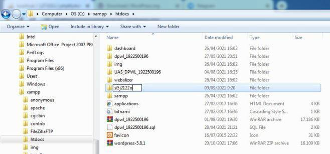
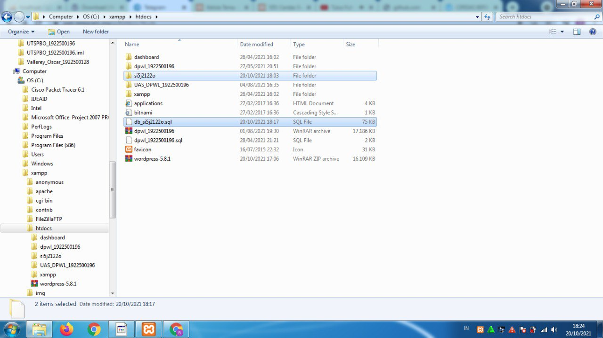

NIM = 1922500196
Nama = Reza Anggraini
Kelompok = SI5J
Pada pertemuan 1 Tanggal 11 Oktober 2021 Mata Kuliah Rekayasa Web membahas materi mengenai :
- Bahan ajar rekayasa web dapat didownload melalui web mahasiswa
- Pada mata kuliah Rekayasa Web ini materinya sama seperti film series Marvel Agents of S.H.I.E.L.D, mata kuliah Rekayasa web ini akan berkelanjutan dan dipergunakan lagi di pertemuan selanjutnya. Jadi kami harus memahami materi demi materi dengan jelas agar tidak ketinggalan materi.
- Membahas mengenai Instruksi, absensi kehadiran,materi,kuis,soal + thread pengumpulan jawaban,video tutorial pembelajaran.
- Wordpress zip didowload dari web Wordpress.org
- Folder Wordpress dapat direname menjadi apapun, misalnya nama kelompok kuliah dan tiga digit nim saya si5j2122o.
- Folder si5j2122o diletakkan didlm folder xampp-htdocs, dan dapat diakses melalui URL http://localhost/si5j2122o
- Serta yang tahap terakhir daftar github.com untuk mengumpulkan tugas pertemuan demi pertemuan selanjutnya .
Berikut tampilan hasil dari pertemuan 1:
tampilan hasil extract here:

tampilan hasil rename:

tampilan hasil sql:
